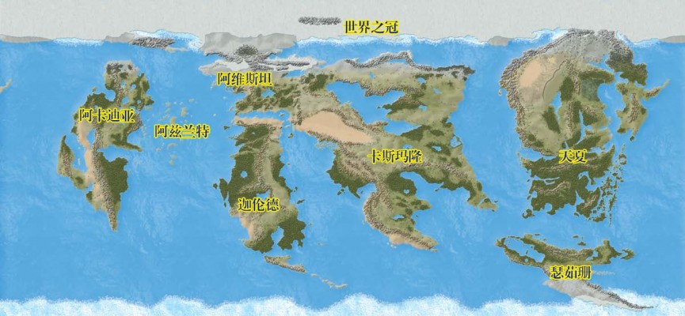

一万年前，格拉利昂（Golarion）世界即将走向终结。星陨之灾（Earthfall）——这最广为人知的灭绝性事件，见证着这世界被暴雨般落下的流星猛烈击打；这流星震动整个大地、轰出新的海洋，也毁灭了旧有的文明。整个世界花了数个世纪来恢复，又花了更多世纪来重建曾经辉煌的社会。
矮人们从幽暗地域的地下空间中来到了地表，这便是传奇的“寻天之旅”（Quest for
Sky）；精灵们为了收回曾经的土地并重现过往传统，通过传送门网络从邻近行星卡斯卓维（Castrovel）回归格拉利昂；还有侏儒们，他们离开神秘的第一世界（First
World），到这里寻找庇护所，是在躲避那些现在早已被忘却的恐怖威胁。从不顾一切只为活下去的零散哥布林部落，到自废墟中出现、想要建立自己社会的勤劳半身人们，这些因先辈被保护而得以逃过星陨之灾的恐怖和毁灭的幸存者们，在黑暗之年（the
Age of Darkness）之中纷纷出现，只为回到它们祖祖辈辈生活着的土地。
但人类的复苏最令人震惊。在星陨之灾后不到2000年，命运之年（the Age of
Destiny）见证了世界各地许多新的人类帝国的崛起。人类建起了奇妙的建筑，而人类的学校重新学习到了那些被认为早已失落的魔法。在这些人类民族中，有一个名叫奥罗登（Aroden）的人，他是星陨之灾的幸存者，亦成就了不朽。奥罗登许久以前就培养了一批忠诚的臣民，臣民们们对他充满敬畏，因为不朽只是他所成就的奇迹之一；他最伟大的成就是发现了一块强大的魔法碎片，今天被称为“星石”（Starstone），它是星陨之灾时落下的星辰碎片，已经沉入了内海的底部。与这个界外之物的接触使奥罗登产生了幻觉，使他经受了一系列非常的武艺考验，并创造出了叫人筋疲力尽的道德困境，比他所经历的任何一次艰苦的经历都更能挑战他的极限。他从这一考验中脱颖而出，成为了一位活生生的神。他第一次展现神迹便将星石和海底的土地一同托举起来，形成了寇托斯岛（Isle
of Kortos），也称为星石岛（Starstone Isle），他在那里建立了艾巴萨罗姆（Absalom）城。
在接下来的几个世纪里，艾巴萨罗姆城逐渐成长为世界上最大的城市之一，而奥罗登的遗产（Aroden's
legacy）也随之一同成长。一个又一个千年过去，奥罗登的注意力越发从担忧内海居民转移到凡人种族之外、更异界的事务之上，但预言已经指明，有一天他将回到格拉利昂，并成功带领人类进入一个充满荣耀的时代。随着人神回归的时间临近，所有的国家都在进行盛大的准备，要迎接他回到格拉利昂。
可事情恰恰相反，奥罗登就此陨落，预言的可靠性也随之逝去。格拉利昂被风暴、战争和超自然的毁灭搅得近乎支离破碎，正因神的死亡标志着新世代的开始——一个充满不确定性的时代，也是一个充满机遇的时代。这就是预言破灭之年（The
Age of Lost Omens），一个从未如此迫切渴望英雄的时代。

内海之外 Beyond the Inner Sea
内海地区由阿维斯坦（Avistan）大陆和伽伦德（Garund）大陆的北部组成，但它只是一个更大世界的一部分。伽伦德本身向南延伸，那里正是某些独特祖先和文化的家园。当人们从内海向东旅行时，广袤的卡斯玛隆（Casmaron）大陆延伸到地平线之外。卡斯玛隆以宽阔的卡斯特罗芬内陆海（Inland
Castrovin Sea）为中心，是格拉利昂各大陆中最大的一个，也存在着一些最古老、最成功的的帝国。卡斯玛隆的更东面是天夏（Tian
Xia）大陆，这个地区通常被称为龙帝国（the Dragon Empires）。天夏的北段连接着格拉利昂最北端的大陆，一片被称为“世界之冠”（the Crown
of the
World）的冰冻地带。这片大陆穿过北极形成了一座连接天夏和阿维斯坦的桥梁。天夏以南是神秘的瑟瑞珊（Sarusan）大陆，由于海岸被强大的风暴和汹涌的水流所笼罩，人们对它知之甚少。从内海地区向西航行，水手们遇到了失落的阿兹兰特（lost
Azlant）的残片，这片荒芜的大陆曾属于人类最古老的帝国之一，直到帝国本身在星陨之灾时被摧毁。从这些废墟向西航行，最终到达阿卡迪亚（Arcadia）海岸，一片有着不寻常魔法传统和强有力国家的土地。在所有这些大陆之下，刻进这颗星球坚硬地壳的，是三重地下世界的曲折隧道，它们被统称为“幽暗地域（The
Darklands）”，那里有难以想象的恐怖和危险，也同样有难以想象的机会能获得胜利和财富。
此外，格拉利昂行星只是环绕太阳运行的11个行星之一。对这颗星球上绝大多数的居民来说，其他11个星球只不过是天空中的光点，但它们并不像人们想象的那么遥远。阿基顿（Akiton）和卡斯卓维是格拉利昂的近邻。来自这两颗星球的旅者都曾造访过格拉利昂，并因某些原因定居下来，最著名的是最初来自卡斯卓维的精灵。即使是最遥不可及的星球，偏远的奥克顿（Aucturn），也曾接触过格拉利昂，它异质的居民对格拉利昂施加了邪恶的影响，最近曾使整个星球处于危险之中。因此，一个明智的人不会忽视格拉利昂星系里其他行星上的危险和神奇。
伟大彼岸 The Great Beyond
在格拉利昂星系之外有数不清的行星，但这些宇宙中的无数个世界，也被称为物质位面（Material
Plane），与宇宙之外的多元宇宙相比，也只是一个碎片。其他存在的位面和奇异的维度将这个现实包裹在一系列分层的、嵌套的球体中，统称为“伟大彼岸”（the
Great Beyond）。这个现实模型只是一个隐喻概念，凡人的头脑很难实质性地把握它的实体存在，因为在伟大彼岸之中，一切皆有可能。
内环宇宙 Inner Sphere
多元宇宙的核心是内环宇宙（the Inner Sphere）。在这里，你可以找到广阔的物质位面及其中无数的世界。元素位面（The Elemental
Planes）像一层层外壳一样围绕在物质位面周围，空气元素位面（the Plane of Air）在最内部，过渡到水元素位面（the Plane of
Water），然后是土元素位面（the Plane of Earth），最后则是火元素位面（the Plane of
Fire），正好与这些元素通常出现在宜居行星上的顺序相反。正能量位面和负能量位面（The planes of Positive and Negative
Energy）也被包括在内环宇宙当中，它们在特定节点上的对立——生与死、创造与毁灭、光明与黑暗，构成了万事万物的开端和终结。
外环宇宙 Outer Sphere
外环宇宙（the Outer Sphere）的实际范围很难界定。众神栖居于此，而那些死者的灵魂聚集在骨园巨塔的尖顶之上，接受死亡女神法莱斯玛（the
goddess of the dead,
Pharasma）的审判。任何事情在外环宇宙都是可能的，它的疆域就和其他任何事物一样，都是哲学和信仰的表现。从巍峨的天堂山（mountain of
Heaven）到充斥着恶魔港湾的深渊（Abyss），无论是痛苦的九层地狱（Hell），还是极乐荒原（Elysium）的无限奇观，一切真实都在外环宇宙中呈现。而随着时间的推移，它们正逐渐被侵蚀，并被一点点还原成正能量位面之中的生命原材料。
其他位面与维度 Other Planes and Dimensions
有些位面和其他位面存在于同一个实体或形而上学的空间中，与其他位面重叠，就像是现实生活中的叠加那样。它们包括复盖在内环宇宙上的幽灵世界：灵界（the
Ethereal Plane）；浩瀚得令人晕眩的星界（the Astral
Plane），复盖了几乎所有实体存在，又填充了内环宇宙和外环宇宙之间近乎无穷的隔阂；还有出没着精类的第一世界、邪恶的阴影位面（the Shadow
Plane），它们都各自与主物质位面重叠。伟大彼岸也存在着一些更为奇妙的地方；其中一些，比如梦境次元（the
Dreamlands），经常被意外访问；而另一些，比如神秘的时间次元（Dimension of
Time），很少——如果真的曾有过的话——被访问。在任何情形下，这些维度都无法通过正常方式进入，并且每个维度都有自己独特的进入和退出方法。
内海地区 The Inner Sea Region
尽管在其他大陆、世界和位面里，有无数冒险的可能正在等待来者，但内海地区仍是探索者（Pathfinder）战役的焦点。这个地区有几十个国度、帝国、边疆和荒原，为英雄和恶棍、探险和冒险提供了巨量机会！
以下几页将内海区域分为10个独立的区域，每个区域都有自己的主题。这里只对每个地区作简要的概述，即使如此也已经足以建立一个基础的图景，并激发读者的想象力。如果您对探索格拉利昂和内海地区感兴趣，请参阅《探索者世界指南》、《探索者冒险》和《探索者冒险之路》系列产品。冒险之路不仅提供了关于该地区的深入资料，还提供了一个完整的战役，这个战役会将一群全新的英雄一路带到力量的高处！
现在内海的年份正是艾巴萨罗姆纪元（Absalom
Reckoning，简称AR）4719年。伴随着现实时间的推移，格拉利昂的时间也在前进。探索者II核心规则书（Core
Rulebook，CRB）首次出版于2019年，而内海对应的年份，最后两位数字相同。格拉利昂的历史非常久远，而其中两个最具重量的事件——AR前5293年，那时星陨之灾几乎终结了整个世界；AR4606年，人神奥罗登陨落，世界各地的预言都开始失效，这正是预言破灭之年的开端。
416页的地图描绘了内海区域，并进一步细分为以下几页探讨的10个分区。这些地区的划分根据的是主题风格而非政治。要深入探索内海地区及其几十个国家和荒原，请参阅《探索者预言破灭世界指南》（the
Pathfinder Lost Omens World Guide）。